All work
Keells redesign
A concept redesign of the Keells supermarket app: a fresher look, simpler navigation and a smoother path from basket to checkout. Shared on LinkedIn, it reached over 100,000 people.
An unofficial concept I designed on my own. It is not affiliated with or endorsed by John Keells Holdings or Keells.
- Role
- UX/UI designer
- Type
- Redesign concept
- Platform
- Mobile app
- Reach
- 100k+ impressions, 2k+ reactions
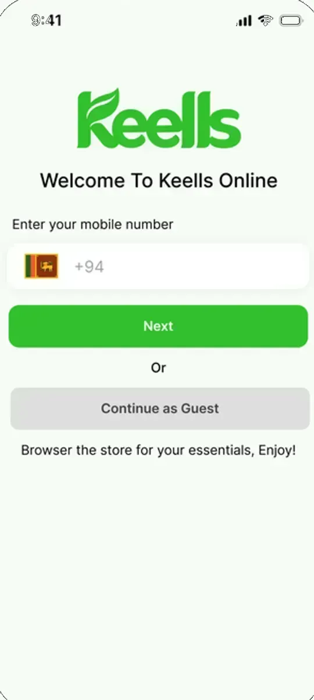
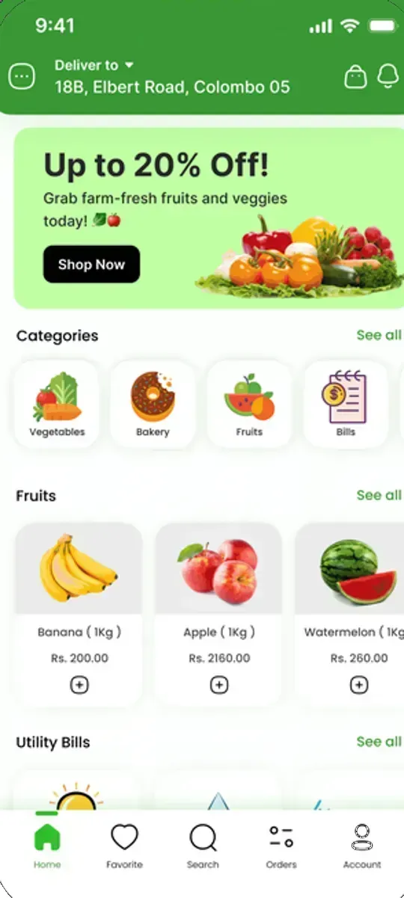
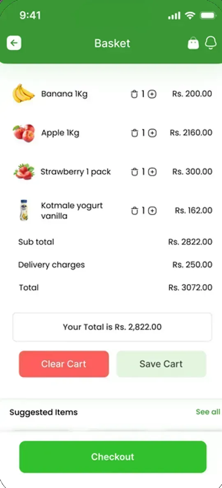
Goal
A modern grocery app people would rather order from than queue.
Problem
Dull colours, a cluttered layout and little reason to browse.
- Role
- UX/UI, end to end
- Type
- Unofficial concept
- LinkedIn reach
- 100k+ impressions
- Reactions
- 2k+
User flow
From opening the app to paying
- I mapped the journey first: onboarding, browsing, the basket and checkout.
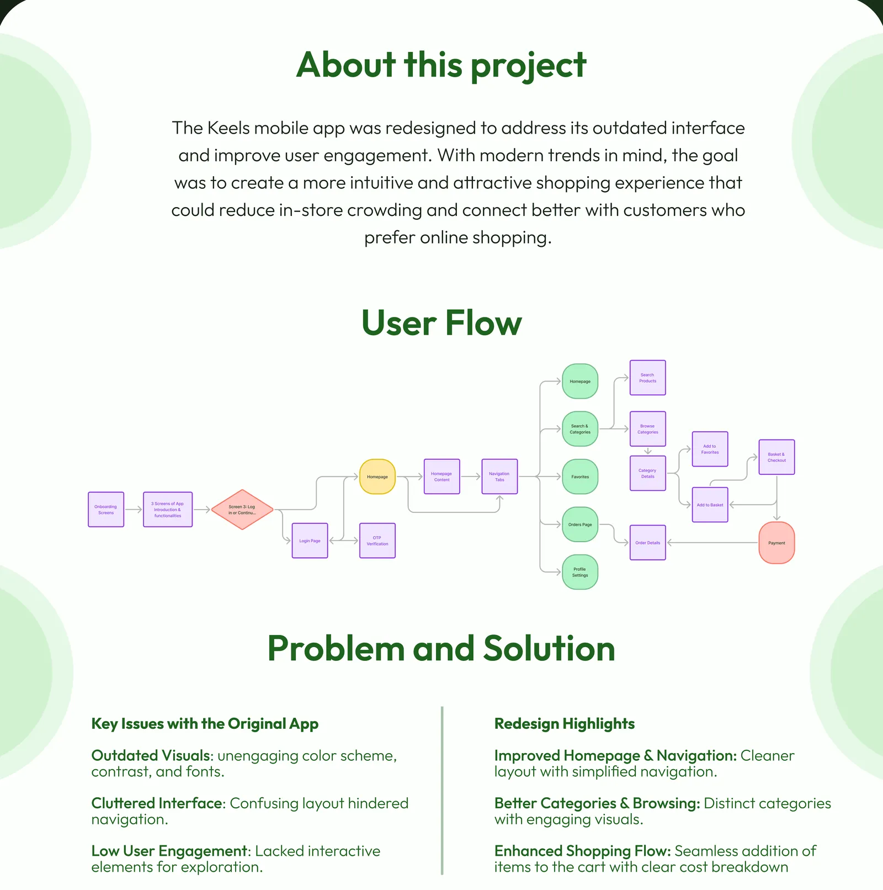
Screens
Pick a part of the app.
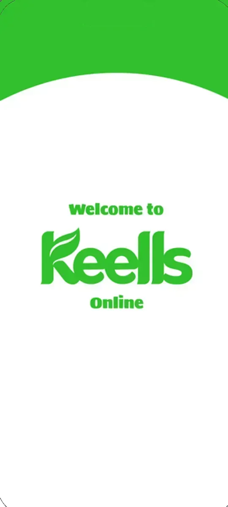
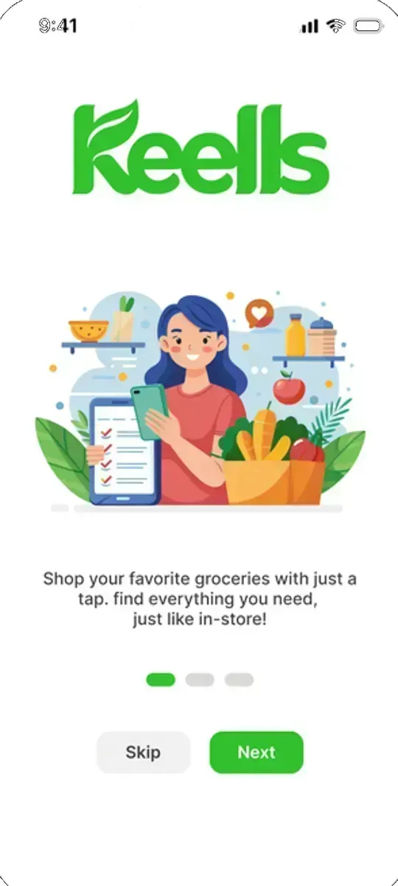
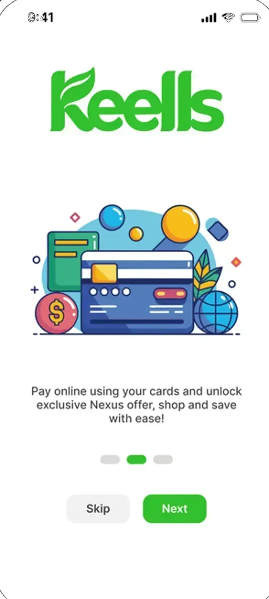
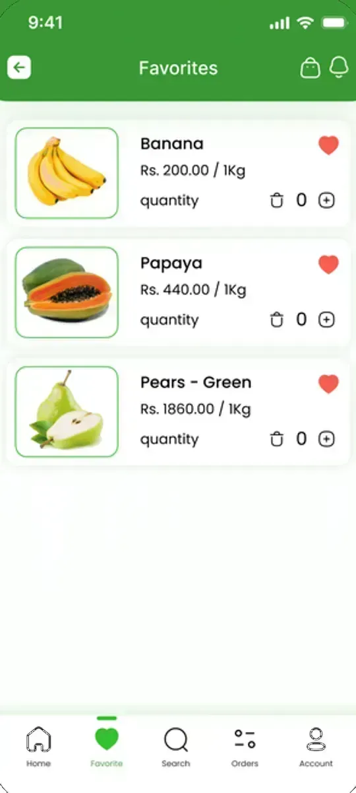
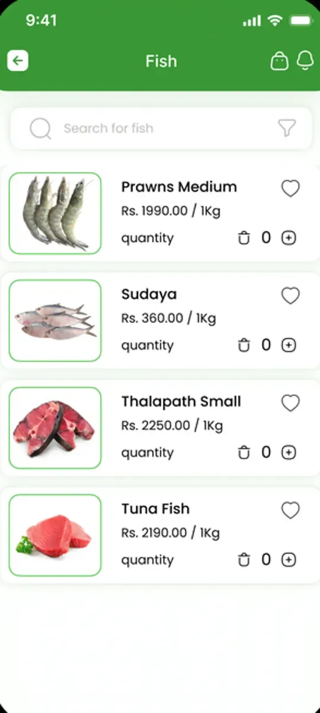
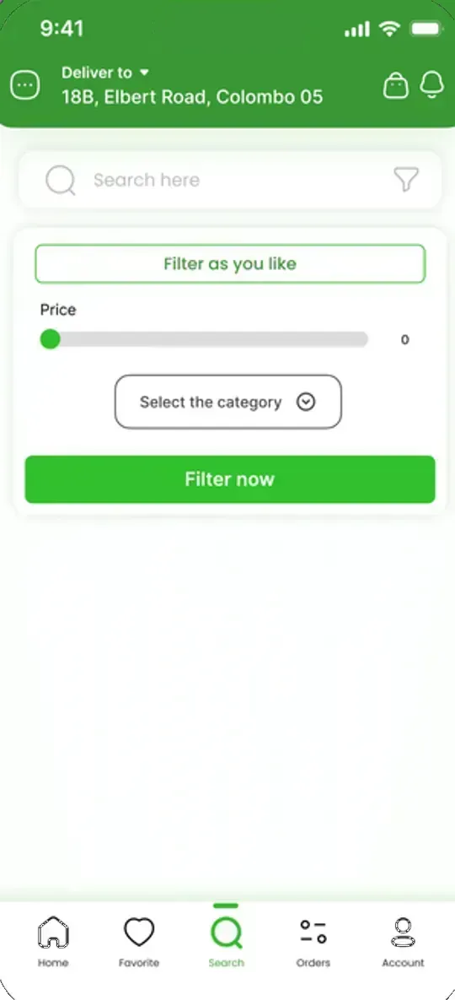
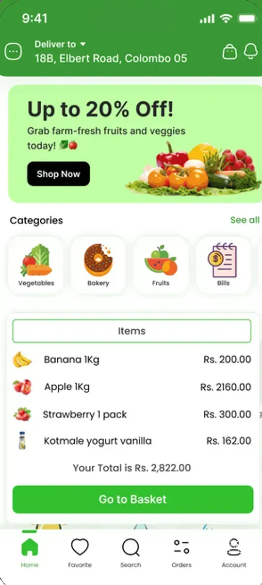
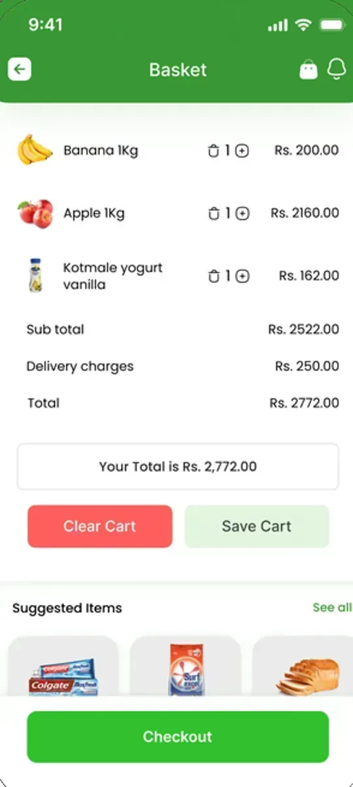
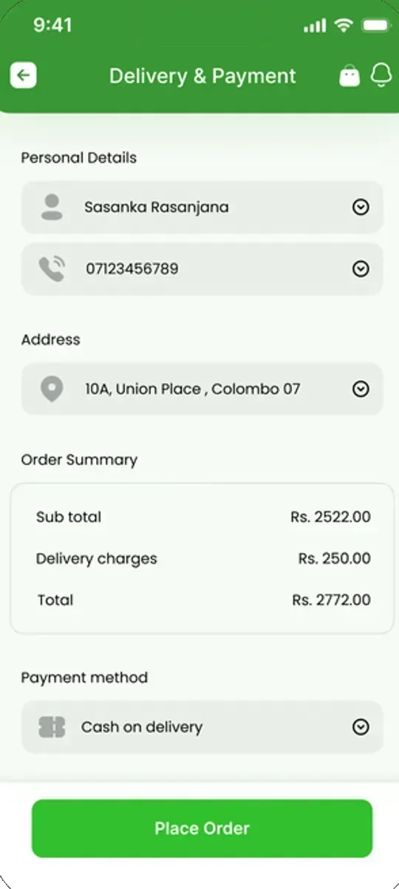
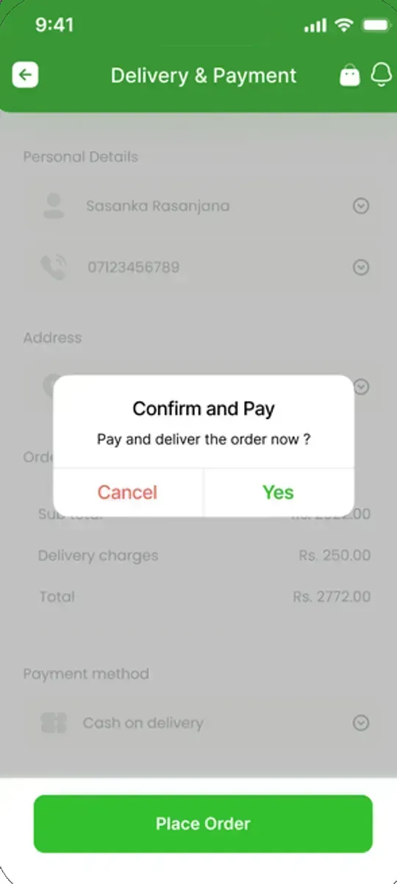
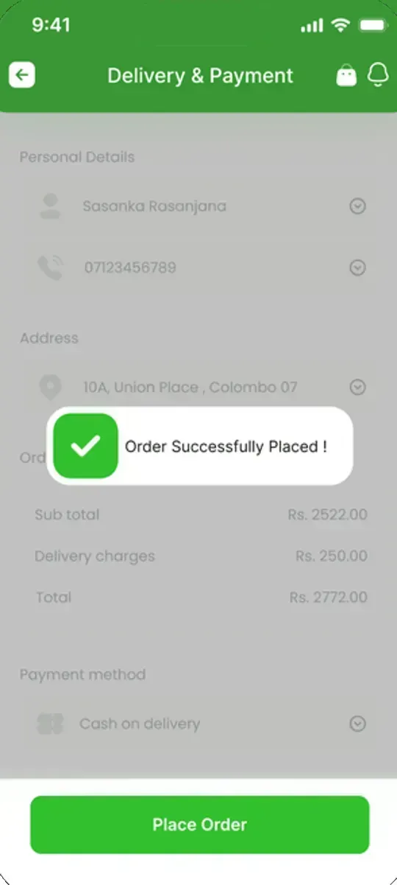
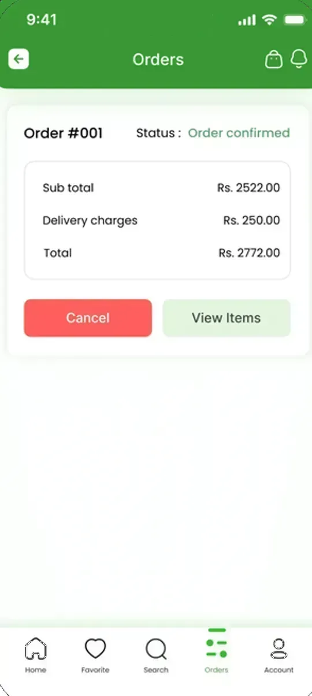
Look and feel
Colour and type
- Keells green, made brighter, with Inter and Poppins.
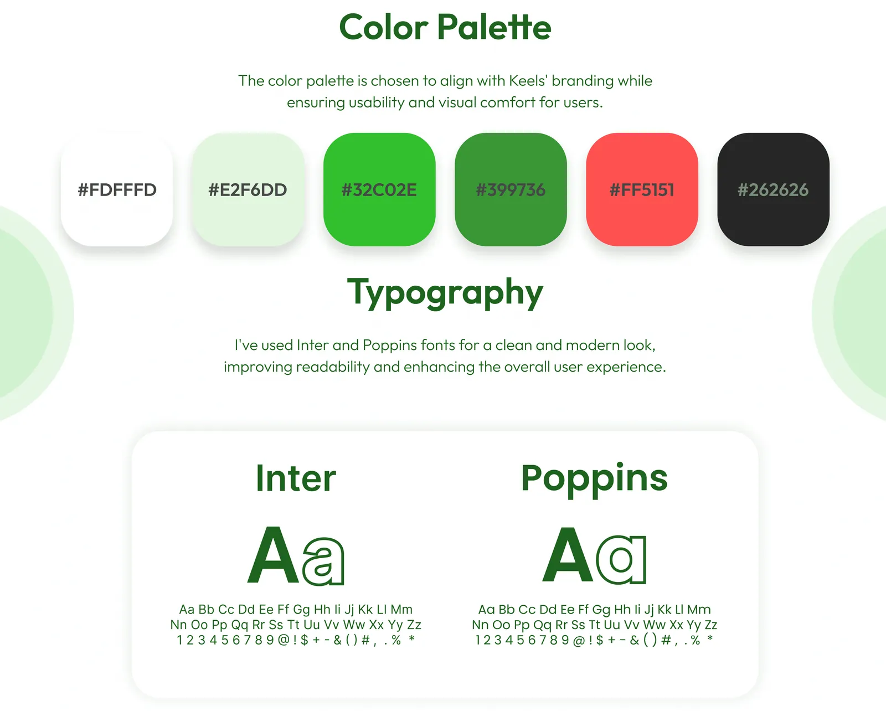
UI kit and prototype
- Reusable components and a clickable prototype.
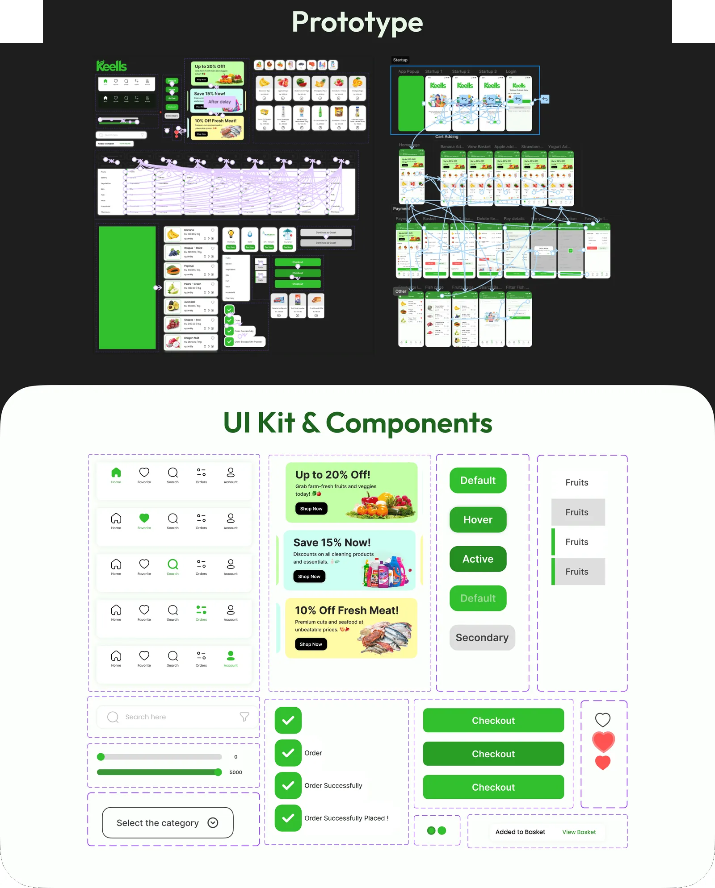
Final look
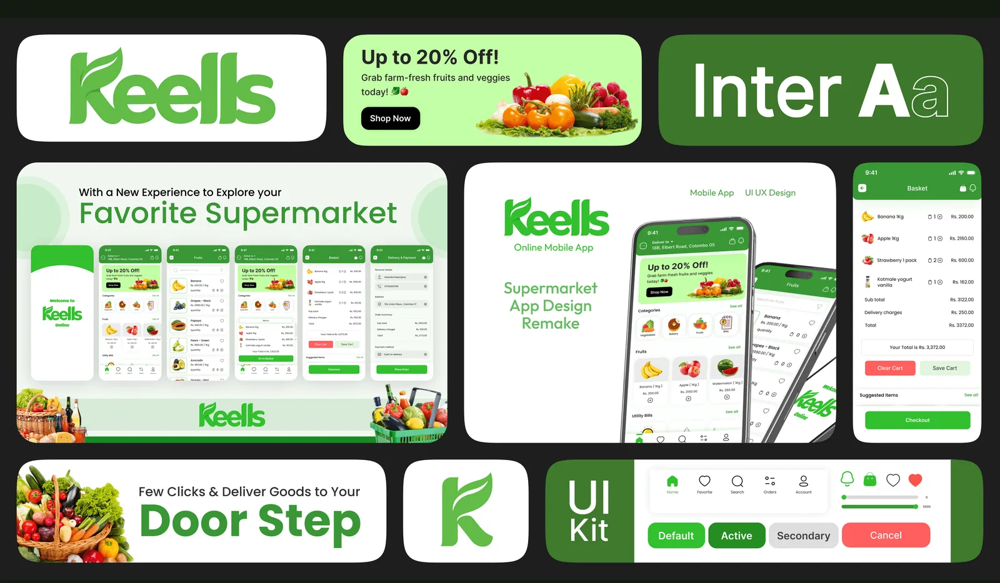